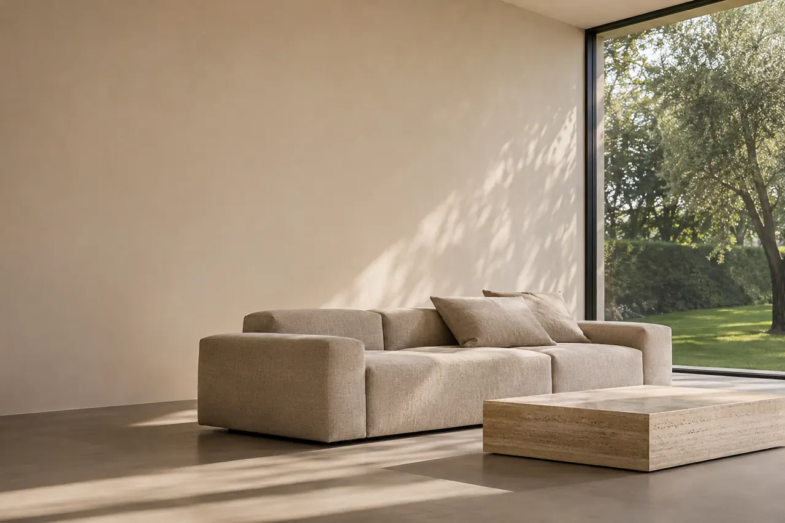
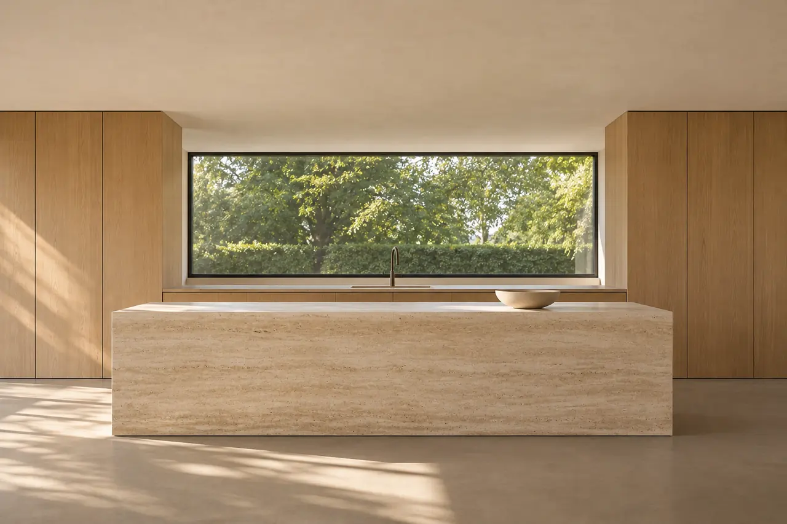
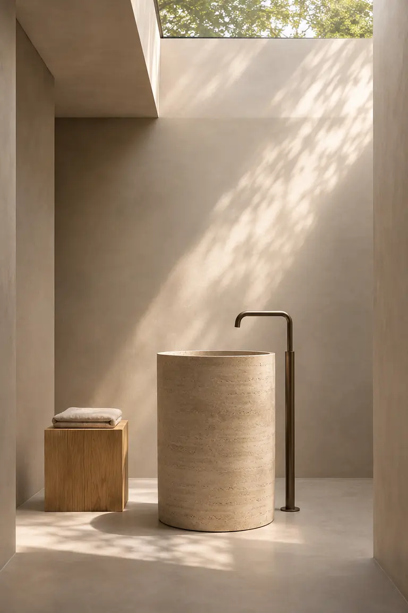
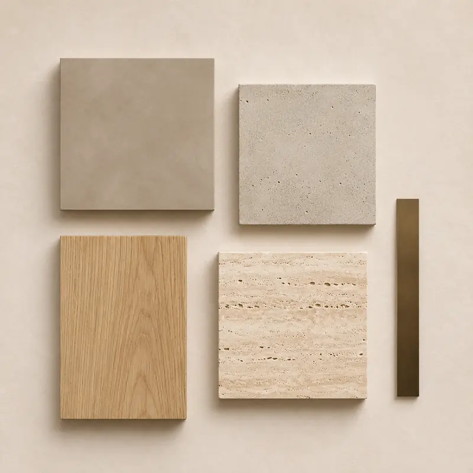

Interior design a Mantova
Progetto interni che ti somigliano: spazi ordinati, luce naturale, materiali scelti con cura e arredi che durano nel tempo.
Primo incontro conoscitivo gratuito e senza impegno.
Un architetto d’interni per la tua casa
L’interior design non riguarda solo l’estetica. Riguarda come ti muovi in casa, dove metti le cose, come entra la luce nelle diverse ore del giorno. Come architetto d’interni lavoro su tutti questi aspetti insieme: distribuzione, impianti, materiali, illuminazione e arredo.
Che tu stia arredando una casa nuova o voglia ripensare quella in cui vivi, parto da come la usi oggi e da come vorresti usarla.

I miei servizi di interior design
Progettazione completa
Trasformo gli spazi in ambienti che esprimono la tua personalità, con progetto dettagliato, selezione dei materiali e arredi su misura.
Restyling di interni
Rinnovo gli ambienti esistenti con interventi mirati su arredi, colori, illuminazione e complementi.
Consulenze specifiche
Supporto su colori, materiali, acquisto degli arredi e home staging, per chi vuole un intervento mirato e rapido.
Perché scegliere un architetto per l’interior design
- Visione d’insieme
- Considero lo spazio nella sua totalità, non solo gli arredi.
- Competenze tecniche
- Conosco materiali, impianti e soluzioni costruttive, e so cosa è fattibile.
- Progetto su misura
- Ogni progetto nasce per te e per la tua casa.
- Valore nel tempo
- Una casa progettata bene è più vivibile e mantiene il suo valore.
- Un percorso completo
- Dalla prima idea alla realizzazione, con un solo riferimento.

Il mio processo creativo
Ascolto e analisi
Capisco come vivi, cosa ami e cosa non funziona negli spazi attuali.
Concept
Atmosfera, palette, materiali e prime soluzioni distributive.
Progetto dettagliato
Disegni esecutivi, rendering 3D, abaco dei materiali ed elenco degli arredi.
Supporto alla realizzazione
Seguo artigiani e fornitori fino all’ultimo dettaglio.
Costi e tempi indicativi
Un progetto di interior design costa in genere tra il 7% e il 10% del budget complessivo dell’intervento. Per le consulenze specifiche ti preparo un preventivo dedicato. In ogni caso il preventivo è scritto e concordato prima di iniziare.
Le cifre sono indicative e servono a orientarti: ogni progetto ha il suo preventivo.

- Fase creativa
- 1–2 settimane
- Progetto esecutivo
- 2–3 settimane
- Realizzazione
- 4–8 settimane, secondo la complessità
Domande frequenti
Quanto costa un progetto di interior design a Mantova?
L’investimento per un progetto professionale è in genere tra il 7% e il 10% del budget totale dell’intervento. Un progetto ben fatto aiuta a spendere meglio il resto: evita acquisti sbagliati e permette di confrontare le offerte dei fornitori.
Posso fare un progetto di interior design senza ristrutturare?
Sì. Un restyling può cambiare molto gli spazi con interventi non strutturali: arredi, illuminazione, colori e tessuti.
Quanto tempo richiede un progetto di interior design completo?
Indicativamente 1–2 settimane per la fase creativa, 2–3 settimane per il progetto esecutivo e 4–8 settimane per la realizzazione, secondo la complessità.
Che differenza c’è tra interior designer e architetto d’interni?
Come architetto d’interni, oltre agli aspetti estetici e funzionali, seguo quelli tecnici, strutturali e normativi. Se l’intervento richiede modifiche agli spazi o agli impianti, posso progettarle e firmare le pratiche necessarie.
Posso chiederti solo una consulenza su colori o arredi?
Sì, è proprio lo scopo delle consulenze specifiche: un aiuto mirato su un ambiente o su una scelta, senza un progetto completo.
Trasforma i tuoi spazi con un progetto professionale
Dimmi che casa è e cosa ti piacerebbe ottenere. Ti ricontatto per un primo incontro.